ARTE DE RECICLAR
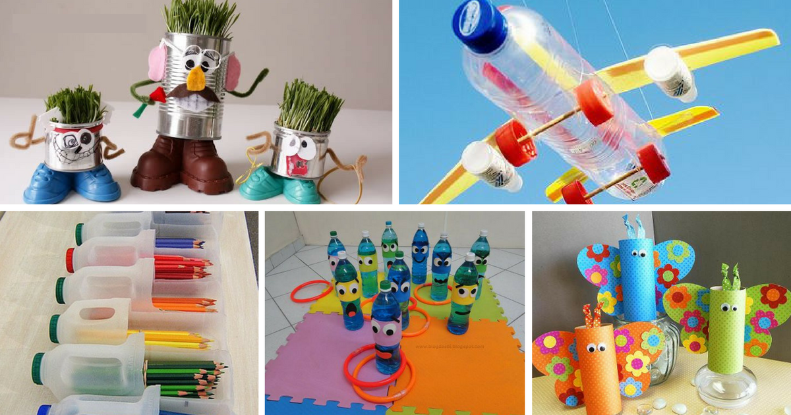5 Ideias de Decoração com Reciclagem
Aqui você vai descobrir maneiras fantásticas de fazer decoração com reciclagem. Trouxemos ideias simples, mas que dão um show!
Com objetos feitos à mão você pode melhorar o visual da sua casa inteira, desde o jardim, até o quarto, cozinha, sala e banheiro. Sendo assim, mostraremos aqui vários artesanatos simples, todos feitos com materiais recicláveis, tais como: latas, garrafas de vidro, caixotes e papelão.
1) Vaso com Vidro Reciclado
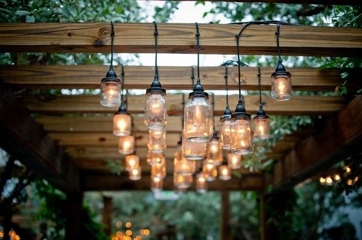
Vamos te mostrar como fazer uma luminária pendente artesanal! O legal é que esse artesanato reciclado pode ser utilizado em vários ambientes.
Essas luminárias são super indicadas como decoração para casamento, ou seja, esta é uma ótima dica para as noivinhas que não abrem de uma decoração linda, diferenciada e claro, econômica. Você deseja aprender como se faz esse belo artigo de decoração? Então bora lá conferir a lista de materiais.
Materiais Necessários:
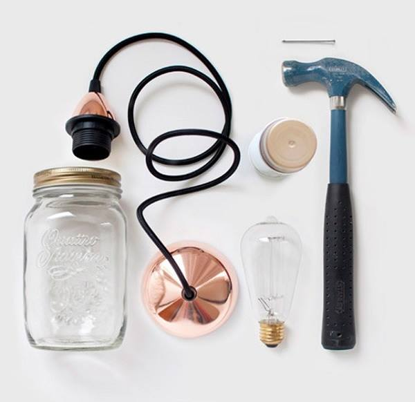- Pote de vidro com tampa
- kit para luminária pendente
- Lâmpada
- Martelo
- Prego
- Tinta em Spray
Como Fazer Luminária com Potes de Vidro
1 - Marque na tampa do frasco o tamanho da boquilha da lâmpada. Com o martelo, faça furos bem em cima dessa marcação. O objetivo aqui é fazer abrir espaço para abrigar a boquilha da luminária.
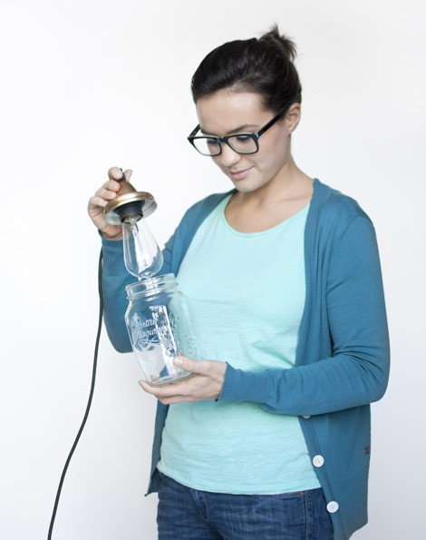
2 - Depois de retirar o círculo, encaixe a boquilha conforme mostrado na foto. Nesse momento você pode tampar qualquer fresta que tenha ficado usando a massa durepoxi. Dependendo do modelo do kit que for utilizar, você pode usar até mesmo um pouco de cola instantânea para evitar que as peças se soltem.
3 - Proteja o fio elétrico com uma fita crepe e pinte o restante com tinta spray na cor desejada.
4 - Por último, encaixe a tampa no pote.
E já está pronta a sua luminária feita com pote de vidro reciclado! Ela fica incrível em qualquer ambiente, por isso fará sucesso na sua decoração.
Créditos pelo tutorial - https://www.artesanato.com/blog/luminaria-pendente-artesanal/ Crédito das fotos: http://woonblog.typepad.com/woonblog/2012/10/diy-bokaallamp.html
2) Relógio de parede feito com colheres de plástico reutilizadas
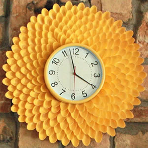
Você fez uma festinha em casa e tem várias colheres de plástico que não terão outro destino a não ser o lixo? Pois então, antes que você as jogue fora por achar que elas não têm mais nenhuma utilidade, nós vamos te mostrar como você pode fazer um belo trabalho manual utilizando milhares de colheres que antes teriam um destino bastante maléfico para o meio ambiente.
Trata-se de uma relógio com moldura estilizada com colheres de plástico, um trabalho tão surpreendente que nem dá para acreditar que foi feito com um material que é sempre jogado fora. Essa ideia apaixonante é só uma das milhares de coisas que você pode fazer com esse item, já que reutilizar materiais recicláveis nunca sai de moda.
Materiais Necessários:
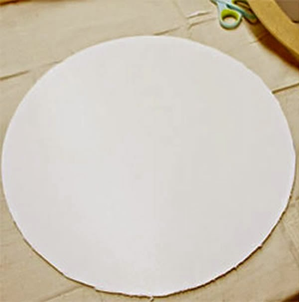- Colheres de plástico
- Tesoura e estilete
- Cola quente
- 1/2 metro de espuma fina
- Relógio de parede
- Parafuso e chave de fenda
- Tinta spray
- Papel
- Fita adesiva
- Arame
Como fazer o relógio de parede reciclado
1 - Com o estilete, corte um círculo de isopor com um raio de pelo menos 18 cm. Para um melhor resultado, utilize uma espuma mais maciça e fina.
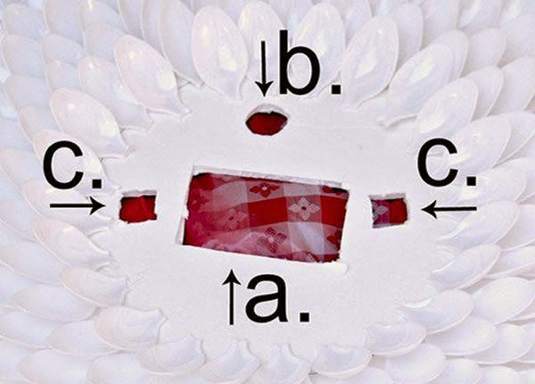
2 - Coloque o relógio em cima do círculo de espuma e trace com lápis, para que você saiba o espaço que será utilizado pelo relógio.
3 - Na parte central da espuma, faça o seguinte: a) um retângulo no meio de acordo com as medidas do relógio, para que você possa trocar de pilhas sempre que precisar; b) o círculo na parte superior para pendurar o relógio; c) dois furos laterais (posição 3hrs e 21hrs do relógio). Esses furos serão utilizados para prender o relógio no isopor.
4 - Corte o cabo das colheres com a ajuda da tesoura e cole-as com cola quente ao redor da marcação do relógio, feita anteriormente. Comece de fora para dentro e vá circulando toda a extensão do isopor. A cola quente é ótima, pois seca rapidamente e não influencia no acabamento desse projeto.
5 - Cubra o relógio com papel e fita adesiva e pinte com a tinta spray que você escolheu. Não se esqueça de proteger a sua superfície de trabalho. Em seguida, pinte também a moldura com colheres de plástico e espere secar completamente.
6 - Prenda o relógio com arame nos buracos que você fez no passo 3 (letra C) e cole com cola quente na superfície do isopor. Por fim, prenda o relógio na parede com parafuso.
Esse passo a passo é ótimo para decorar sua casa com estilo e reutilizar um material que antes seria jogado fora.
Créditos pelo tutorial - https://www.revistaartesanato.com.br/relogio-de-parede-feito-com-colheres-de-plastico-reutilizadas//
Crédito das fotos: http://www.thatswhatchesaid.net/2012/chrysanthemum-clock/
3) Estante alternativa feita com caixotes de madeira
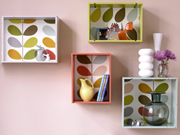Você está precisando de uma estante na sua sala para organizar seus objetos de decoração ou simplesmente deseja dar uma repaginada no visual da sua casa? Pois saiba que você pode ter objetos reutilizáveis em casa que vão te ajudar a resolver esse problema. E não precisa ser nenhum gênio ou artista para fazer o que vamos propor a seguir, basta fazer o projeto com carinho e dedicação para que você renove a aparência da sua casa. Vamos ensinar como fazer uma linda estante com caixotes de madeira, que podem ser personalizados da maneira que você quiser.
Materiais Necessários:
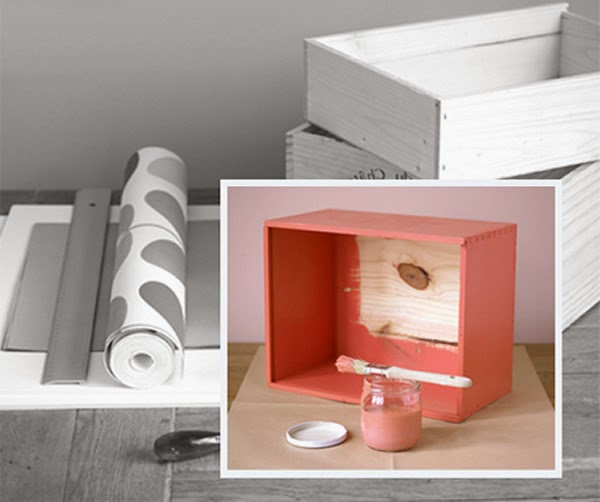- Caixotes de madeira
- Papel de parede
- Tinta acrílica
- Papel
- Pincel
- Cola branca extra
- Lixa
- Papel toalha
- Ganchos
Como fazer a estante com caixotes de madeira
1 - Passe a lixa nos caixotes para limpar e deixá-los bem lisos. Em seguida, passe tinta acrílica branca para fazer a base e assim que secar completamente, passe uma camada de outra cor que preferir. Aguarde a secagem total.
2 - Corte o papel de parede do tamanho do fundo da caixa e cole-o com a cola branca. Passe o papel toalha por cima para eliminar bolhas e para que ele fique bem esticado.
3 - Repita os passos acima com quantos caixotes quiser e pendure-os com ganchos de quadro de pintura na parede. Invista não só no design e na disposição dos caixotes, como também nos objetos que serão expostos.
Créditos pelo tutorial - https://www.revistaartesanato.com.br/relogio-de-parede-feito-com-colheres-de-plastico-reutilizadas//
Crédito das fotos: http://theplungeproject.com/diy-recycled-wine-crate-shelves
4) Porta Recados Magnético Feito Com Caixa de Leite e Tecido
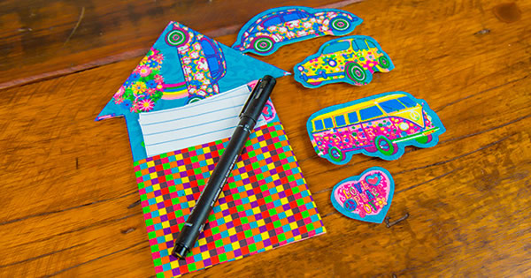
Ideal para a porta da geladeira e muito útil em escritórios. De quebra você ainda vai aprender a fazer imãs de outros modelos, mas todos combinando.
Em resumo, dá pra fazer peças muito lindas com a técnica que ele vai ensinar. Então fique por dentro dos materiais que iremos utilizar…
Materiais Necessários:
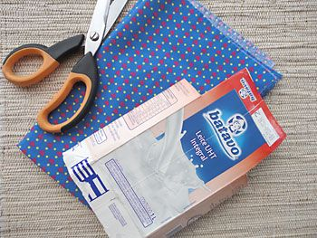- Caixa de leite trtra pack
- Cola quente
- Cola branca extra
- Pincel ou rolinho para espalhar a cola
- Régua
- Caneta para tecido
- Tecido comum
- Tecido impermeabilizado
- Imã
- Tesoura
Dicas:
- Você pode impermeabilizar o tecido em casa mesmo, com a termolina caseira, por exemplo.
- Os imãs devem ser utilizados de acordo com a necessidade.
- A cola quente é indispensável para a colagem dos imãs.
- Com essa ideia você pode fazer imãs de formatos variados, ficam lindos!
- Utilize as sobras da caixinha para fazer peças menores, como corações.
- Faça porta recados e imãs diversos para vender e para presentear!
Como fazer - Passo a passo:
Você ficou curioso e quer saber como se faz esses lindos objetos decorativos e super úteis no dia a dia? Pois então assista agora ao passo a passo preparado especialmente para você! É um artesanato fácil de ser feito e que fica muito barato.
Confira como colocar em prática essa incrível ideia!
INFORMAÇÕES DO ARTESÃO: - Thiago Silva
Atelier Rethalho - https://www.facebook.com/RethalhoHandCraft
Crédito do tutorial - https://www.revistaartesanato.com.br/porta-recados-magnetico-feito-com-caixa-de-leite
E então? Ficou babando no trabalho maravilhoso do Thiago, não é mesmo? Então salve esta página no seu favoritos, providencie os materiais (que provavelmente você já tem em casa) e mãos à obra!
5) Prateleira com Paletes
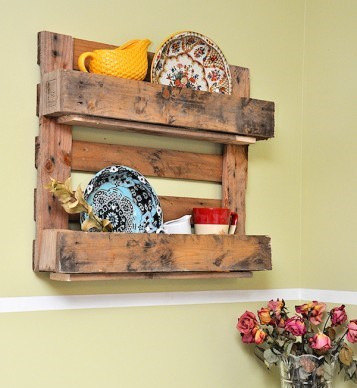
O uso de paletes de uma forma funcional e decorativa é a tendência mais fresca no ramo de decoração de interiores. O baixo custo deste material permite novas invenções e designs completamente variados e inovadores.
Além do espírito mais simplista que as decorações estão assumindo, nunca esteve tão presente a necessidade de reutilização e reciclagem de materiais. Sendo assim, os paletes são o colírio para quem deseja não só reciclar este objeto, mas também imprimir um ar mais rústico e funcional a decoração do seu espaço.
Por que não incluir alguns itens utilizando paletes em sua casa? Seguindo este passo a passo você vai aprender a construir uma prateleira de paletes para você deixar a sua cozinha de cara nova.
Materiais Necessários:
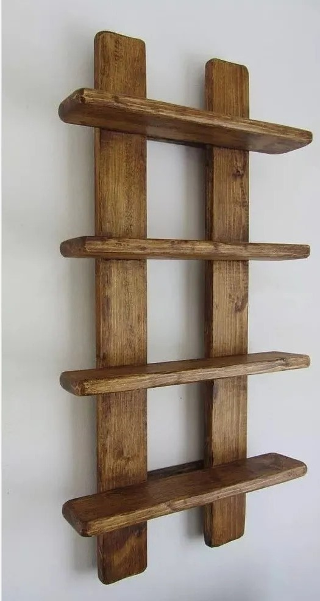- Paletes
- Lápis
- Serra tico tico
- Martelo ou pistola de pregos
- Lixa(Opcional)
- Pregos
- Parafusos
Como fazer
1) Primeiramente, planeje o tamanho da sua prateleira e marque com o lápis onde você deseja que o palete seja cortado.
2) Corte os paletes usando a serra tico tico. Se você não tem experiência com o corte de madeira, peça a algum profissional para fazer isso para você. Este processo deve ser feito com extremo cuidado para evitar acidentes.
3) Após cortar o palete do tamanho que você havia planejado, irão restar algumas tábuas. Escolha as que estiverem em melhor estado para construir o suporte da sua prateleira.
4) Usando o martelo ou a pistola de pregos pregue as outras tábuas como base da sua prateleira. Geralmente as pregas em paletes já estarão velhas e gastas, por isso lembre-se de reforçar todas as junções para criar mais suporte para a sua prateleira.
5) Após pregar as tábuas base, sua prateleira já está pronta e é só fixá-la na parede! Se você achar que a madeira está com a aparência muito velha e suja, você pode usar uma lixa para limpá-la e depois passar tinta da cor que desejar ou um verniz para que fique mais brilhante. Mas o que torna um artigo produzido com paletes tão especial é deixá-lo com a madeira do jeito que foi encontrado. Este é o seu grande diferencial!
O que você achou deste projeto? Quem aí está louco para também ter uma prateleira como esta em casa?
Créditos pelo tutorial - https://www.artesanato.com/blog/como-fazer-prateleira-com-paletes/
Crédito das fotos: http://diycandy.com/2014/07/make-decorative-pallet-shelf/